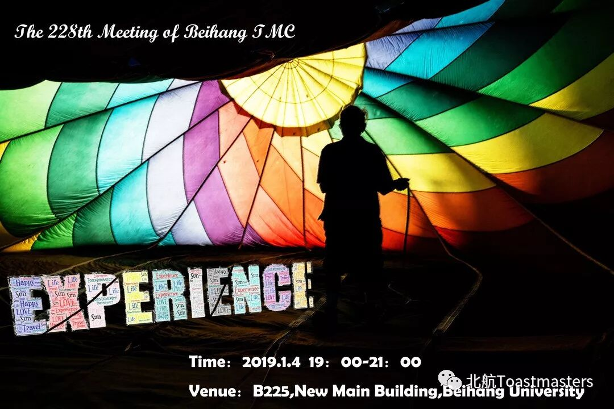

 | 体验 |  |
 在生命过程中，我们都能体验到大自然的存在，家人的情感，生活的滋味，自己的成长经历，每时每刻的思想与变化，自己有意讲过的话，亲自参与的事件，亲自动手的工作，对一个时代的记忆......
随着时光流逝，我们亲身体验到的生活内容越来越丰富。这自然包括对外界的印象和自己内心的变化，一起构成一个人全部的生活经历。尽管一个人的生命历程是短暂的，但是在他人生历程中所能体验到的一切，丰富异常。
体验到的东西使得我们感到真实，并在大脑记忆中留下深刻印象，使我们可以随时回想起曾经亲身感受过的生命历程，也因此对未来有所预感。 在生命的长河中，你又有哪些体验呢？周五晚七点，我们静静聆听。 时间：本周五晚19：00—21：00 地点：北航新主楼，B225 | ||